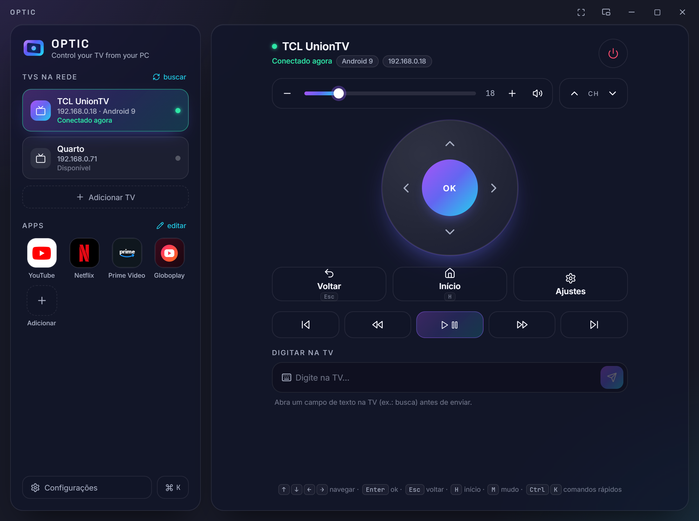
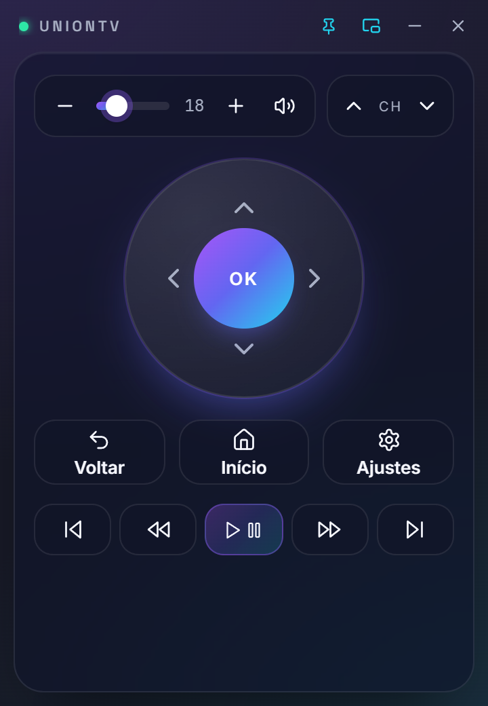
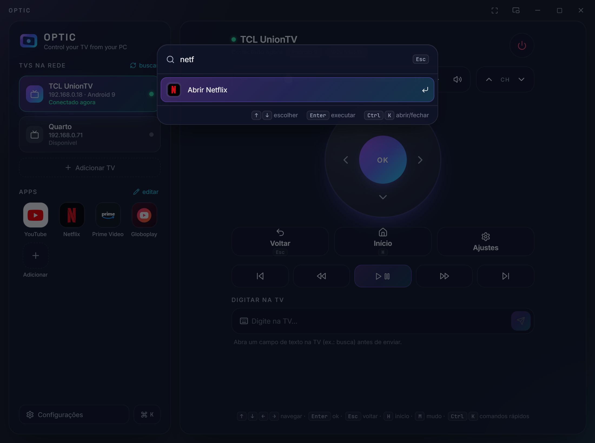
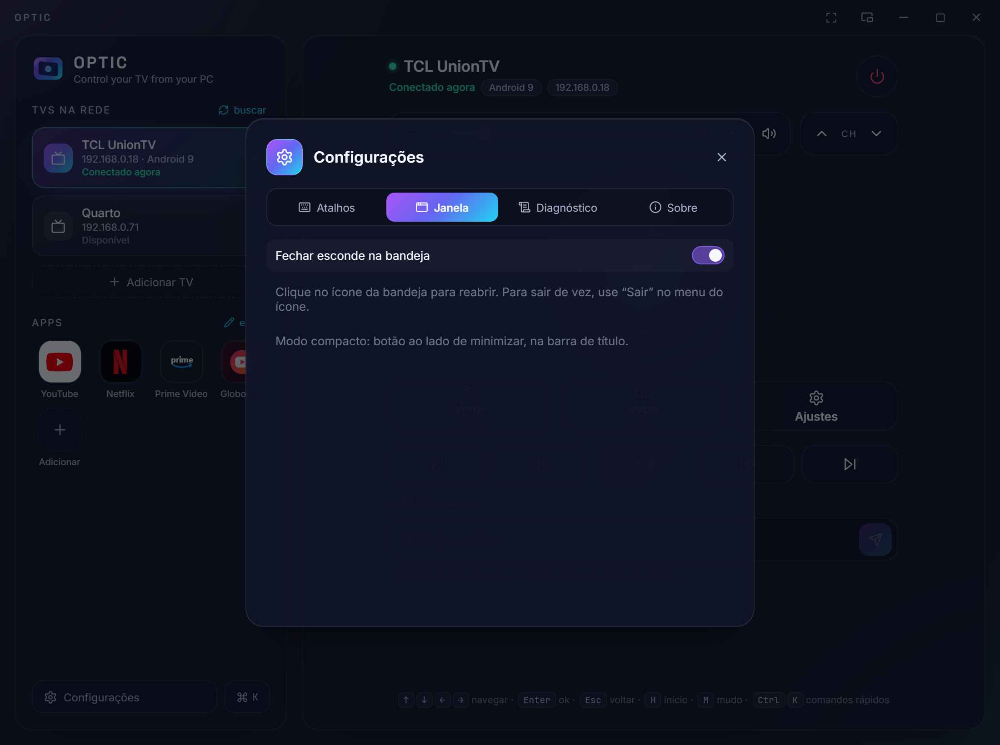

Finds your TV
Open the app and the TV shows up in the list. Pair once with the code shown on the screen.
Android TV · Google TV · Roku · LG · Samsung
OPTIC is a remote control for your PC. Navigate, open apps, change the volume and type on the TV with your keyboard. No extra hardware, no cloud, no account.
Free and open source · Windows, macOS and Linux

Open the app and the TV shows up in the list. Pair once with the code shown on the screen.
Arrows, OK, back, home, volume, channels, media and power, with keyboard shortcuts.
YouTube, Netflix, Prime Video, Disney+ and Spotify open straight from OPTIC.
Write searches with your PC keyboard instead of picking letters one by one.
A small window that stays on top, next to whatever you are doing.
Your PC talks straight to the TV on your network. Nothing goes through servers.
Pick your system.
OPTIC-windows-amd64-setup.exe Windows 10 or 11, 64-bit
If you see "Windows protected your PC" (SmartScreen), click More info › Run anyway. This happens because the app does not have a paid digital signature yet.
Next, Install, Finish. OPTIC gets a shortcut in the Start menu and on the desktop, like any program.
With OPTIC open, right-click its taskbar icon › Pin to taskbar.
This is Smart App Control in Windows 11, which blocks apps that are unsigned and have no reputation yet. Download the latest version (each version is evaluated again) or use the portable version OPTIC-windows-amd64-portable.exe from the same downloads page. Turning Smart App Control off fixes it, but lowers your PC's protection and often cannot be turned back on without reinstalling Windows.
To uninstall: Settings › Apps › OPTIC › Uninstall.
OPTIC-macos-universal.dmg macOS 11+, Intel and Apple Silicon
Open the .dmg and drag the OPTIC icon to the Applications folder.
Open OPTIC once, then go to System Settings › Privacy & Security › Open Anyway (macOS 15+). Only the first time: Gatekeeper asks for this for apps not notarized by Apple. Alternatively, run xattr -dr com.apple.quarantine /Applications/OPTIC.app in Terminal. After that it opens normally from Launchpad or Spotlight.
If macOS asks whether OPTIC can find devices on the local network, click Allow. That is how it finds the TV.
This is Gatekeeper with files downloaded from the internet. In Terminal, run xattr -dr com.apple.quarantine /Applications/OPTIC.app and open it again.
To uninstall: drag OPTIC from Applications to the Trash.
OPTIC-linux-amd64.tar.gz x64, needs GTK 3 and WebKitGTK
# Ubuntu / Debian
sudo apt install libgtk-3-0 libwebkit2gtk-4.0-37
# Fedora
sudo dnf install gtk3 webkit2gtk4.0tar -xzf OPTIC-linux-amd64.tar.gz
cd OPTIC && ./install.shInstalls for your user only, without sudo. OPTIC shows up in the applications menu.
To uninstall: delete ~/.local/bin/optic-desktop and ~/.local/share/applications/optic.desktop.
It takes less than a minute.
Keep the PC and the TV on the same network (Wi-Fi or cable). The TV must be on.
Open OPTIC: the TV appears under TVs on network. Not there? Click scan or Add TV and type its IP (on the TV: Settings › Network).
The TV shows a 6-character code. Type it in OPTIC. Only needed the first time.
Use the buttons, the keyboard or Ctrl K. Next time OPTIC reconnects by itself.



With the OPTIC window focused and outside a text field.
TVs with Android TV or Google TV (TCL, Sony, Philips, Xiaomi, Chromecast with Google TV, Android TV boxes and others) that have Google's remote control service, the same one the Google TV phone app uses. Roku TVs (Philco, AOC, TCL Roku and others) also work, without pairing, as do LG TVs with webOS and Samsung TVs with Tizen (2016 and later). On those two, just accept "Allow" on the TV.
Check that the TV is on and on the same network. Guest networks and some routers isolate devices: use Add TV with the TV's IP. On Windows, allow OPTIC in the firewall when asked.
Open the text field on the TV after connecting OPTIC. Netflix and Prime Video use their own keyboard, which does not receive text through this protocol: use the arrows and OK, or the TV's global search.
This happens if the TV was reset or if you removed OPTIC from its list of remotes. Just enter the new code.
OPTIC only talks to your TV, over your network, with an encrypted connection (TLS). There is no account, telemetry or server. The code is open: github.com/andredeomondes/optic.
The pairing certificate, last TV and preferences are in %APPDATA%\optic (Windows), ~/Library/Application Support/optic (macOS) or ~/.config/optic (Linux).